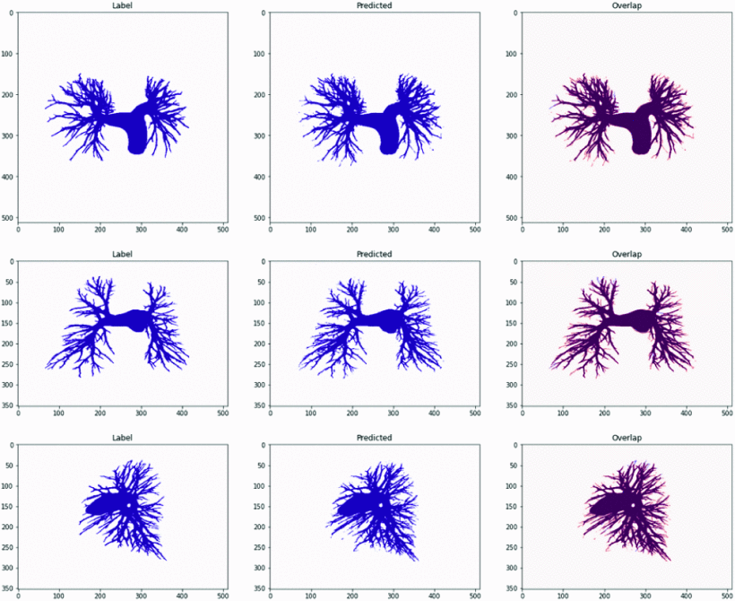
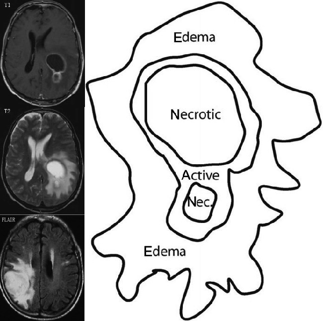
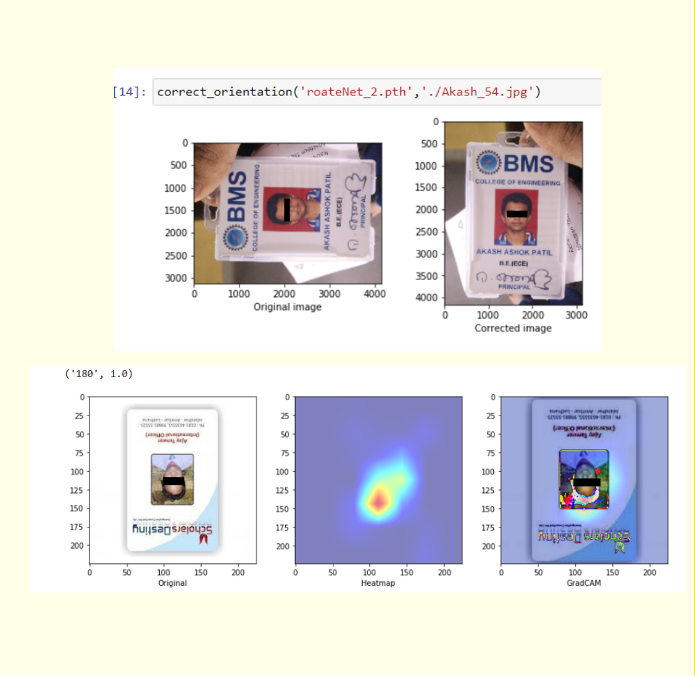

|
About me
My research interest lies in the application of AI to solve real-world problems. I am particularly interested in the intersection of computer vision, deep learning, and cognitive science. My life is continuously motivated by two ancient concepts of Tyāga (Sanskrit: त्याग), which is a Sanskrit word that means sacrifice, and Tāpasya (Sanskrit: तपस्), which means austerity. I try my best to follow them firmly.
|
Publications
|

|
Parse Challenge 2022: Pulmonary Arteries Segmentation Using Swin U-net Transformer(Swin UNETR) and U-net
Akansh Maurya,
Rohan Padhy,
Kunal Patil,
Kalluri Ramakrishna,
Ganapathy Krishnamurthi
2023 IEEE 20th International Symposium on Biomedical Imaging (ISBI) Cartagena, Colombia, 2023
paper /
code
|
|

|
A Study on Criteria for Training Collaborator Selection in Federated Learning
Vishruth Shambhat,
Akansh Maurya,
Shubham Subhas,
Ganapathy Krishnamurthi
International MICCAI Brainlesion Workshop, BrainLes 2021
paper
|
|

|
A system for verifying non-standard personal identity documents using deep learning
Akansh Maurya,
Sudhanshu Dubey,
Omkar Manjrekar,
Andrea Furtado,
P Amith,
Kavi Arya,
Authorea Preprints 2021, 2021
paper /
code
|
|
{kind=link}